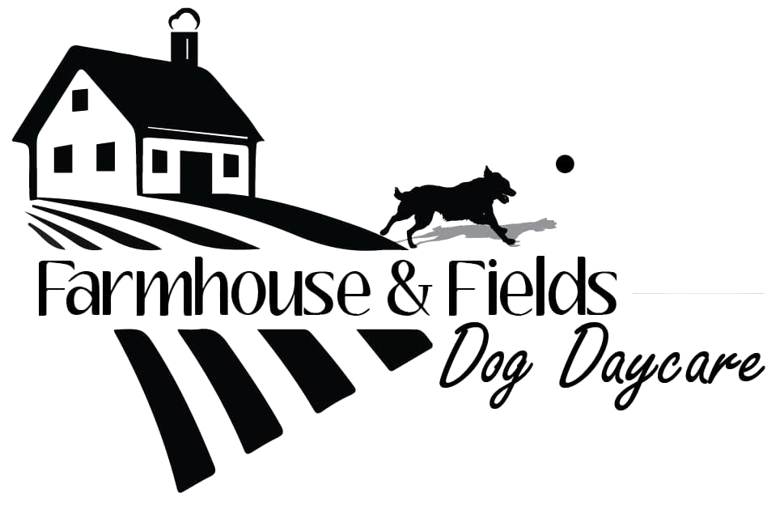

The Yellow Front Door

Brand Direction
The colours, type, photography, voice, and a few lines we can start building from. The goal is simple: when someone lands on the site, they should understand what the Farmhouse is, how it works, and why people trust you with their dogs.
1 What Makes Farmhouse & Fields Special
Your Farmhouse already has a very clear feel to it. The website does not need to invent one. It needs to show what you've built: a small, consistent group of dogs, a place that feels comfortable and familiar, lots of room to play, and someone who knows and loves the dogs like her own.
At the Centre
Low, consistent numbers. Familiar dogs. Lots of room.
Farmhouse & Fields keeps the group small and familiar. You get to know each dog incredibly well: who they play with, how they settle in, what they love, and when they need a little space.
You Know These Dogs
That comes through all over your Facebook page. You know their friendships, routines, quirks and personalities, and you clearly love having them there.
That personal connection is one of the strongest parts of your business and it should be visible.
The Farmhouse Itself
Your house, yard, barn and fields are part of the experience. It is the "home away from home" for these pups and is a big part of what makes the experience unique.
Warm and Easy
People should feel welcome here, but they should also be able to find what they need without digging: how daycare works, what the day looks like, pricing, the wait-list, policies, and what happens next.
2 Colour
Mostly white, with a little warmth and colour. The sites you liked were all light and simple. Keeping white as the main background gives us that clarity, while the red, dusty blue, logo, and real photography keep it from feeling plain.
Select a Red Option (6 Variations):
Select a Dusty Blue Option (4 Variations):
Main accent. Warm and strong enough to draw the eye without taking over.
A soft, weathered blue-grey. Quieter second accent balancing warmer tones.
A warm neutral for the occasional section, card, or background when white needs a little break.
The main backdrop. Clean and light with enough warmth beside photography.
Our main text colour. Softer than true black, but still strong and easy to read.
3 Typography
Warm headings. Clear everything else. Your logo already has its own personality and script, so the website type should complement it rather than compete with it. Test 3 distinct font pairings below:
Select a Font Pairing Option:
Small numbers. Big days.
abcdefghijklmnopqrstuvwxyz
0123456789 (!@#$%&*.,?)
abcdefghijklmnopqrstuvwxyz
0123456789 (!@#$%&*.,?)
4 Photography
Your photos are one of the best parts of the brand. You are fabulous at capturing the dogs as they actually are. Your Facebook page already tells the story of the Farmhouse through play, friendships, seasons, funny moments, the property, and the dogs' individual personalities. We should use that. So rich and fun and brings in an amazing storytelling element.
1. Use real photos throughout
Not just in a gallery at the end, but work them into the home page, About page, daycare information, and anywhere they help show what a day actually looks like.
2. Let the photos tell stories
Use the muddy ones, the goofy ones, the beautiful ones, group shots, quiet moments, and dogs with their favourite friends. They do not all need to look polished.
3. Keep editing light (but primarily zero)
Crop for layout and make small corrections when needed, but everything else stays the same.
4. No stock photos, ever
Tons of amazing photos makes the job so much easier. Use your photos throughout the site, build a standalone gallery, and pull in a box from Facebook for the day-to-day stories.
5 Voice
The website should sound like you. Your Facebook page already has the right voice. It is warm, direct, and full of little stories because you actually know these dogs—their friends, their habits, their quirks, what they love, and what makes them themselves. You clearly love what you do, and that should come through without dressing it up.
What We Carry Into The Website
Specific dogs, real moments and down to earth language. A little humour when the moment calls for it. There is so much material to weave a beautiful little story.
You know and love these dogs like your own. We want that to come through in the stories and details, not in a pile of marketing words.
What We Avoid
No lofty pet-care language, no trying to sound luxe, and no endless dog puns.
Skip words like "premium," "curated," and "exceptional" when plain language says it better.
6 Words to Try
A few tagline ideas to consider. These are just a few examples that help as we work through the website details. Take them, leave them, mix them up, or come back with something completely different. Even as working lines, they help us keep the website and visual pieces moving in the same direction.
7 Keeping It Consistent
A few things worth keeping consistent. Nothing here needs to be complicated. These are just the choices that give us a solid starting point for the website and anything you make later.
1. Keep the site light: White first, with red as the strongest accent. Let the photos carry a lot of the colour.
2. Use the real place: Farmhouse, yard, barn, fields, seasons, and dogs. We don't need extra "farmhouse" decoration.
3. Keep type simple: Let the logo keep its own script.
4. Use real photos only: Build from your gallery.
5. Keep the words warm and real: Specific stories, normal language, and no lofty pet-care copy.
6. Make the practical stuff easy: Pricing, hours, services, wait-list, policies, and next steps should always be easy to find.
8 Website Direction & Potential Pages
How the website could come together so Farmhouse & Fields feels like itself: you, the dogs, the Farmhouse, and the photos.
| Page Title | Content & Purpose |
|---|---|
| 1. Home | A first look at the Farmhouse, the daycare, and what makes it special, with great photos and clear ways to explore the rest of the site. |
| 2. The Farmhouse | Your story, the house, yard, barn, and fields, and a little more about how Farmhouse & Fields came to be. |
| 3. Daycare | How daycare works, hours, pricing, group size, routines, requirements, and what families should know before their dog starts. |
| 4. Gallery | A home for your photography: everyday play, friendships, quiet moments, muddy days, changing seasons, and life around the Farmhouse. |
| 5. FAQs | Straightforward answers to the things families are most likely to wonder about before getting in touch. |
| 6. Join the Wait-list | A clear explanation of the process, what happens next, and a simple way for families to tell you about their dog. |
| 7. Current Clients | An easy route to Time To Pet and any other information existing families need regularly. Can sit separately in navigation as a quick link. |
| 8. Contact | A simple way to reach you. |
First Pass
This is our starting point. You can tell us what feels right, what does not, and what you want to push further before we build the full site.